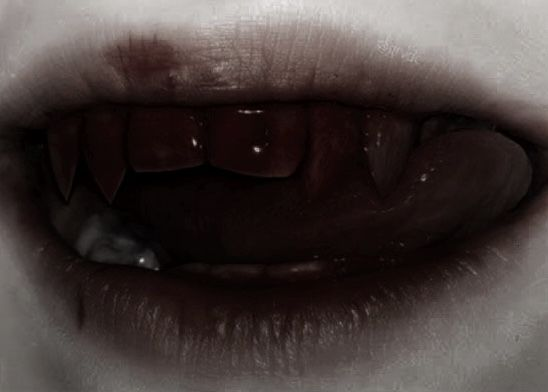

Chapter 1 - Awakening - First Blood

You feel something animalistic surge up inside you. Brutal claws extend from your fingertips and your eyes flash red as your fangs extend. Before the woman can even scream you lash out with your claws and tear her throat. Acting on pure instict you yank the poor woman's gargling body back inside the room and dig your fangs into her neck. You snarl and then feel the greatest taste you've ever experienced spread across your tongue. Her blood was divine and all you can focus on is gulping down the sweet red nectar...
You feel yourself become more of a passanger in your body as instinct takes hold. You guide the woman inside and as she turns to examine the room you pull her neck to the side and bury your newly grown fangs into her neck. As you gulp down her blood you discover it tastes and feels amazing. This simple act of feeding is the best experience you've ever had in the moment.
When you come back to yourself the poor womans bloodless corpse lies on the floor and your hunger is sated. Fear shoots through you. You've just drained someone of all their blood and enjoyed it... All you can do is gather the few things that were yours in the room and leave quickly.
Leave the room quickly